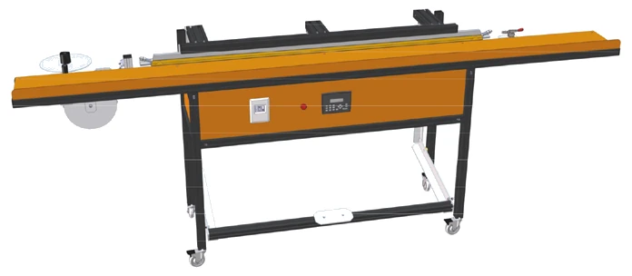

Saldatrice manuale Basic
ATT001-B
La saldatrice, denominata Basic, serve a saldare la fettuccia laterale (10 mm) e la fettuccia della barra maniglia (50 mm) sia per zanzariere su misura che zanzariere in kit.
Il suo funzionamento è da considerarsi interamente manuale, in quanto l’azionamento è avviato mediante una pedaliera meccanica direttamente collegata alla barra saldante superiore. L’operatore premendo con il piede sulla pedana farà chiudere la barra saldante superiore su quella inferiore dando inizio alla saldatura.
Questo processo viene chiamato saldatura termica ad impulsi ed è totalmente gestito dal computer di bordo (PLC) che in funzione dei parametri impostati modula il passaggio di corrente elettrica sulle resistenze delle barre saldanti generando il calore necessario a fondere il PVC presente nella fettuccia creando un perfetto accoppiamento con la rete.
Questa macchina è stata realizzata mediante l’accoppiamento di profili strutturali in lega di alluminio verniciati e da pannelli di copertura in lamiera d’acciaio verniciati a polveri epossidiche.

| Voce | Valore |
|---|---|
| Dimensioni barra saldante | 1.560 mm |
| Lunghezza massima | 3.000 mm |
| Larghezza massima | 500 mm |
| Altezza massima | 1.100 mm |
| Peso | 150 kg |
| Fettuccia laterale | 10 mm |
| Fettuccia barra maniglia | 50 mm |
| Codice | Ricambio |
|---|---|
| ARI001M | Serie resistenza |
| ARI002M | Serie rivestimento teflon |
| ARI018M | Kit cerniere in ABS |
| ARI019M | Invito fettuccia regolabile |